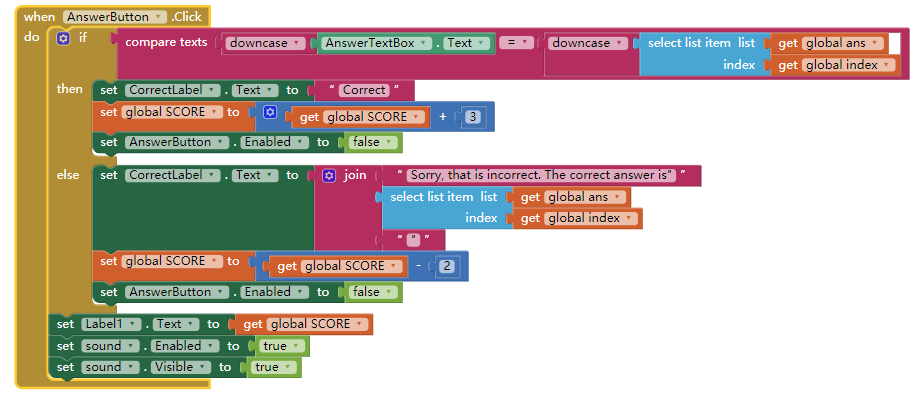
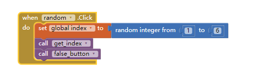

1) Describe the significance of the global variable index. How is indexing used with lists in this app?
The significance of the global variable index is use to find out a item from the lists.The indexing is used to select the list of item from a variable.
2)Describe how parallel lists were used in this app. Why was the parallel structure of the lists necessary?
The parallel lists is use to change the question,answer,and image variable at the same index and it work at the same time.It's necessary because if the index of question and answer is different,then the user would be wrong even they get the correct answer.
3)Include screenshots of your code for exercises 2 and 3 from the Enhancements section.


4)Include a screenshot of the code that added your extra question (exercise 4). Explain why the code for the buttons worked without any changes after the addition of the extra question.

The code for the buttons worked without any changes after the addition of the extra question because when we add the question and answer on the list,the variable would add one on the list,with the index variable,it will just keep adding up the index # for everytime you click on next question button,so it when you click on next button,the index variable would +1,then with the code select item get index would get the item which is same number of index.